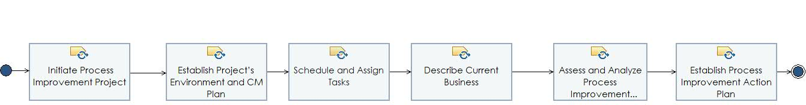

Phase: Initiating and Diagnosing Phase
First Phase of the NIC ADPI whose main purpose is to establish initial improvement infrastructure and the ADPI plan.
Description
Work Breakdown Structure
Team Allocation
Work Product Usage
Workflow

Work Breakdown